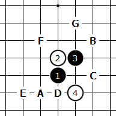

山口下的花浦同型
#1 山口下的花浦同型 作者：江南新绿 发表时间：2009-8-19 11:50:20

其中A-F 6个必胜点，G点是论坛战实战打点
A，B 点原本的必胜，
C点 通寒恒星
D点 通云月3打必胜，6=A后通浦月4打必胜
E点 岚月必胜，可以参考论坛棋谱
F点 感觉不太复杂的必胜
［ 潇洒 于 2009-8-19 12:08:14 时奖励此帖[金币加 20 威望加1］
#2 Re:山口下的花浦同型 作者：小丸.net 发表时间：2009-8-19 15:22:35
看起来像个残月#3 Re:山口下的花浦同型 作者：江南新绿 发表时间：2009-8-19 18:35:22
丸子把黑白看反了吧
#4 Re:山口下的花浦同型 作者：索非亚 发表时间：2009-8-19 18:52:40
=======上图对应的爱五子棋谱代码如下，以便你拆解：========
h8h9i9i7h7g7i10
======================================================
请问下 -- 黑5 D点 这个7可以必胜么？
我都是下这个7，不知道必胜的是哪个7
#5 Re:山口下的花浦同型 作者：潇洒 发表时间：2009-8-19 19:09:52
=======上图对应的爱五子棋谱代码如下，以便你拆解：========
h8h9i9i7h7g7j8
======================================================
#6 Re:山口下的花浦同型 作者：沉默是金 发表时间：2009-8-19 20:24:26
=======上图对应的爱五子棋谱代码如下，以便你拆解：========
h8h9i9i7h10o1h11
======================================================
这两个也必胜
［ 茗弈宽容 于 2009-9-16 14:40:06 时花20金币送鲜花一朵］
#7 Re:山口下的花浦同型 作者：江南新绿 发表时间：2009-8-19 21:37:29
谢谢6楼提供的必胜，其中5手通寒星，5=7的点从直觉上看，也是黑大优。
#8 Re:山口下的花浦同型 作者：茗弈梓轩 发表时间：2009-9-16 14:19:02
学习了
#9 Re:山口下的花浦同型 作者：索非亚 发表时间：2009-9-22 21:57:31
=======上图对应的爱五子棋谱代码如下，以便你拆解：========
h8h9i9i7h7g7j8g8
====================================================== 这个呢？
#10 Re:山口下的花浦同型 作者：索非亚 发表时间：2009-9-22 21:58:52
突然想到的一盘有趣的花月
=======上图对应的爱五子棋谱代码如下，以便你拆解：========
h8h9i9j8g7f6f8h6
======================================================
#11 Re:山口下的花浦同型 作者：小天元子 发表时间：2009-10-10 15:40:15
=======上图对应的爱五子棋谱代码如下，以便你拆解：========
h8h9i9i7g8
======================================================
这个5也是必胜的，不过有点繁琐
具体可参考溪月地毯的通型
=======上图对应的爱五子棋谱代码如下，以便你拆解：========
h8g8f7h6g7
======================================================
［ 淡红的秋樱 于 2009-10-10 22:08:36 时花20金币送鲜花一朵］
#12 Re:山口下的花浦同型 作者：淡红的秋樱 发表时间：2009-10-10 23:23:22
=======上图对应的爱五子棋谱代码如下，以便你拆解：========
h8h9i9i7g8g7j8i8j7j9k10k8
======================================================
地毯没找到，似乎有些小复杂。今天搞不定了
#13 Re:山口下的花浦同型 作者：小帮帮 发表时间：2010-1-3 1:09:25
这么看来，花浦互通周围的点，全是必胜点啊？除了中间填进一子是可下的，但这些必胜，能走出来吗？#14 Re:山口下的花浦同型 作者：侯军学棋 发表时间：2010-9-13 16:13:28
=======上图对应的爱五子棋谱代码如下，以便你拆解：========
h8h9i9i7h7j8
======================================================求指点6如何杀
#15 Re:山口下的花浦同型 作者：淡红的秋樱 发表时间：2010-9-18 13:30:35
=======上图对应的爱五子棋谱代码如下，以便你拆解：========
h8h9i9i7h7j8f6g7g5
======================================================
#16 Re:山口下的花浦同型 作者：岑小鱼 发表时间：2011-5-3 19:46:00
什么时候的帖子啊。怎么会显示在最前面？#17 Re:山口下的花浦同型 作者：淡红的秋樱 发表时间：2011-5-4 21:44:10
to 18 楼上，山口版面取消的缘故。